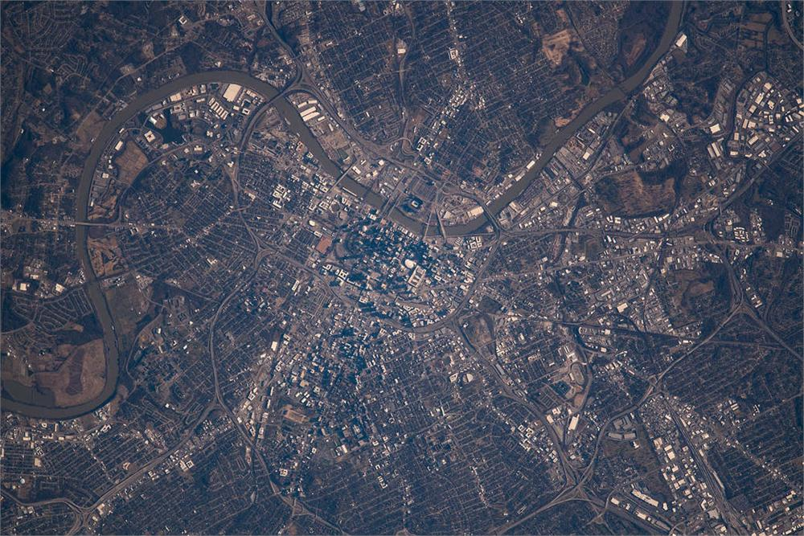

Prospective students
Read the Join Us page before writing. It explains the research program, useful preparation, funding language and the information that makes an initial email useful.
Contact
Email is the most reliable way to reach Koorosh Azizi and the UHR Lab about research collaboration, student opportunities, agency partnerships or public communication.
Read the Join Us page before writing. It explains the research program, useful preparation, funding language and the information that makes an initial email useful.
Researchers interested in coupled urban water systems, climate hazards, distributed infrastructure, network governance, system dynamics, spatial analysis or equitable adaptation are welcome to get in touch.
The lab welcomes collaborations around flooding, stormwater, transportation disruption, water affordability, utility transitions and decision-support needs in Middle Tennessee and beyond.
Email directly for comment on urban flooding, flood insurance, green stormwater infrastructure, water affordability, infrastructure resilience or institutional coordination.

Research base
The lab is developing local research around roadway flooding, emergency access, distributed stormwater infrastructure, climate observation and urban water-system performance.
Partnerships that connect agency data, community knowledge and reproducible modeling can create both locally useful results and transferable infrastructure-systems science.